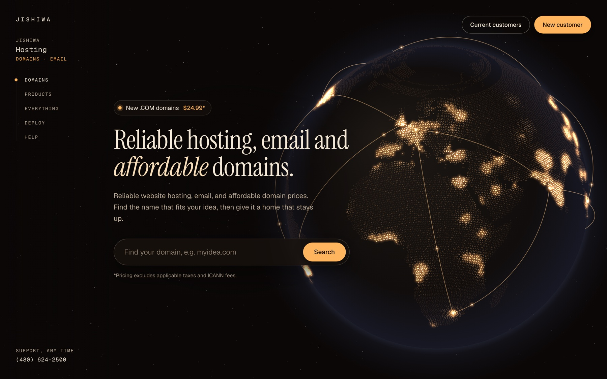
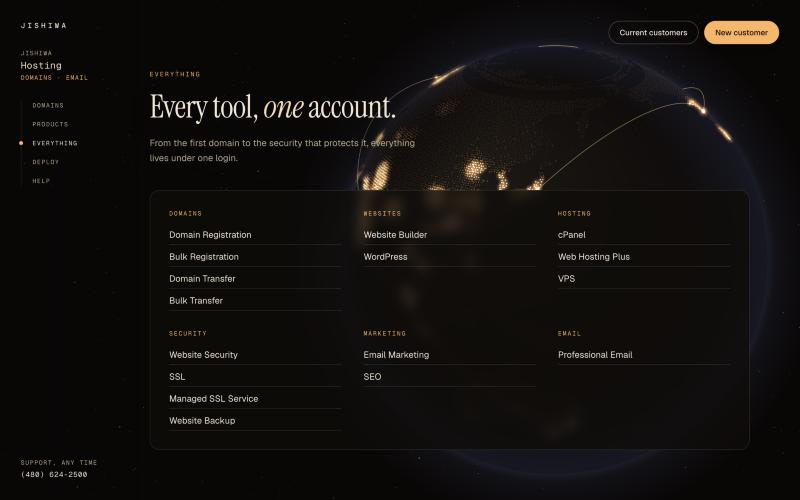
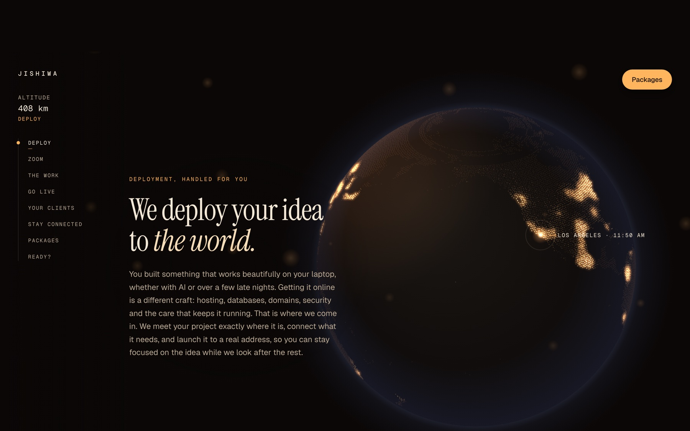
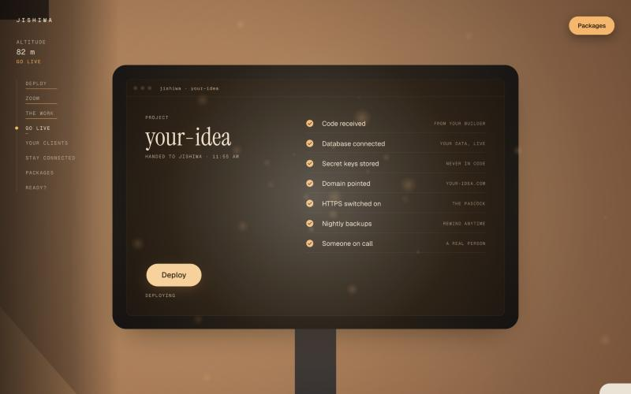
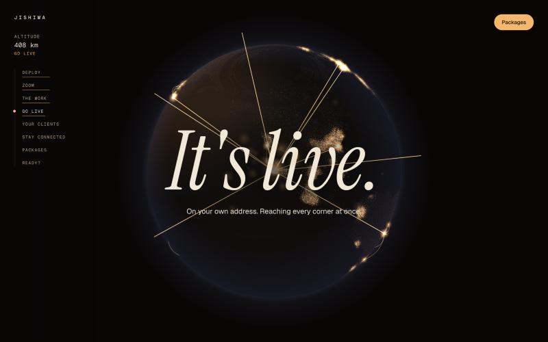
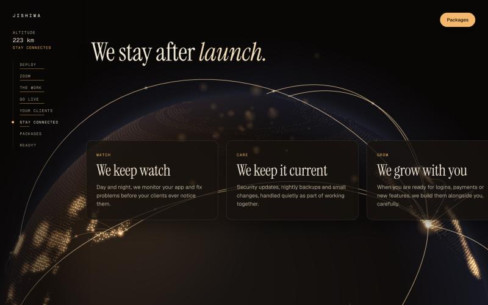
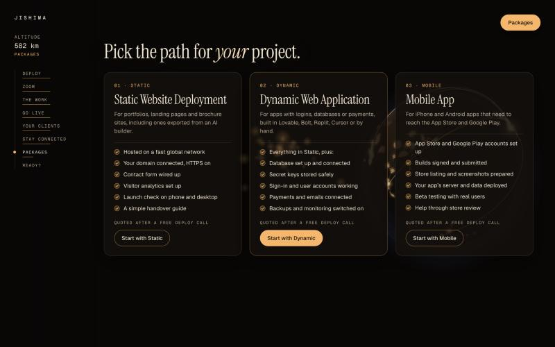
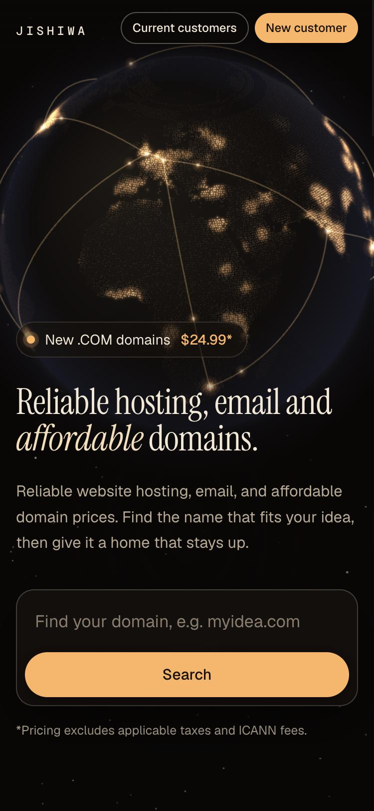

Case study · Product design · Brand · Front end
Jishiwa
A storefront for hosting, domains and email, plus a scroll-told launch page for Jishiwa Deploy, a new service that takes AI-built projects live.
Section 1
From brief to two live pages
I took Jishiwa from a product idea to a working site: a storefront that sells domains, hosting and email, and a launch page for a brand-new service.
- Defined who each page is for and what it has to sell
- Created the brand: night-sky palette, editorial serif, mono labels
- Designed and built both pages, responsive from desktop to phone
- Live on the web and linked to real checkout and sign-in
Section 2
Reliability you can see
Hosting is invisible, so I gave it a picture: a globe of glowing cities, linked by the paths your site travels.
The first screen does one job. A domain search sits front and centre, with the price up front, so a new customer can start the moment they land.
- Domain search as the primary action
- Price shown before anyone has to ask
- A quiet side index for Domains, Products, Everything, Deploy and Help

Section 3
Every tool, one account
A hosting catalogue can feel like a warehouse. I sorted 16 products into six groups people already think in.
- Domains, Websites, Hosting, Security, Marketing, Email
- Three hero products up top: domains, cPanel hosting, professional email
- Everything else one glance away, under a single login

Section 4
A new service, told as a journey
Jishiwa Deploy is for people who built something with AI and need help getting it online. Its page is one continuous scroll, from orbit down to your desk and back out to the world.
An altitude readout drops from 408 km as you scroll, and a chapter index tracks where you are: Deploy, Zoom, The work, Go live, Your clients, Stay connected, Packages, Ready.

Section 5
Hand us the hard part
Deployment is full of jargon, so the page shows it instead: a console that checks off each step in plain words.
- Code received from any AI builder: Lovable, Bolt, Cursor, Replit
- Database connected, secret keys stored, never in code
- Domain pointed, HTTPS on, nightly backups, a real person on call


Section 6
The payoff, then the promise
The scroll lands on one big moment, "It's live", as the globe lights up. Right after, the page answers the real worry: what happens next?
- We keep watch: monitoring day and night
- We keep it current: updates and backups, handled quietly
- We grow with you: logins, payments and new features, when you're ready

Section 7
Three clear paths
Instead of a pricing table, people pick the path that matches what they built, then get a quote after a free call.
- Static. Portfolios, landing pages and sites exported from an AI builder.
- Dynamic. Apps with logins, databases or payments.
- Mobile. iPhone and Android apps headed for the App Store and Google Play.

Section 8
Composed again for the phone
On a phone the globe rises above the headline instead of sitting beside it, and the search button stretches full width for the thumb.
The side index tucks away, so the first screen is still just one clear action: find your domain.